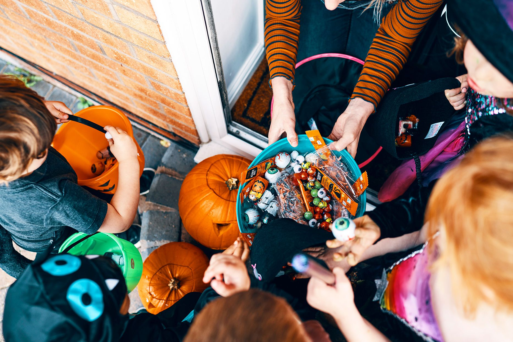

The earliest jack-o'-lanterns were carved from turnips, potatoes, or beets, not pumpkins. The tradition originated in Ireland and Scotland, and was brought to the United States by immigrants.

Candy corn was originally called "chicken feed" when it was first marketed in 1898. It was invented by George Renninger, a candymaker at the Wunderle Candy Company in Philadelphia.

Americans spend over $10 billion each year on Halloween costumes, candy, and decorations.